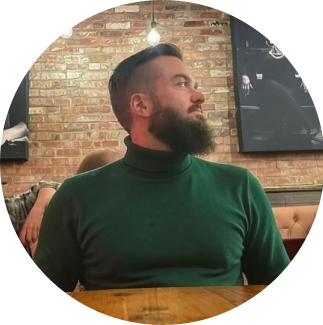

Hi, I’m Brian.
I’m a technical writer based in the San Francisco Bay Area, with more than five years of experience. I’ve spent most of that time inside regulated manufacturing. At Pendar Technologies I wrote work instructions and SOPs for Raman spectroscopy hardware. At Curaleaf I authored batch manufacturing records and administered the company’s Veeva eQMS, which included document change control and CAPA workflows. Since going freelance in late 2024, I’ve mostly built knowledge bases in HTML and SCSS for scaling businesses. What drew me to technical writing, and what keeps me in it, is that I love learning new domains and I enjoy the process of making complicated information easy to understand.
My path here wasn’t direct. I studied linguistics at Temple University, with a minor in English and a Technical Communications certificate, and graduated in 2015. I spent the next four years as an underwriter at a consumer finance company, where I worked daily with regulatory statutes and outside counsel. That work shared more with technical writing than I realized at the time: parsing dense source material, coordinating with specialists, and producing documents that had to survive legal scrutiny. I left to deckhand on salmon boats in Alaska for a season, then came back to tech writing as the first technical writer at Pendar. From there I moved into R&D at Curaleaf, and went out on my own at the end of 2024.
Outside of work I spend a lot of time in the outdoors. I trail run and backcountry ski, and I’d rather map my own routes and explore than sign up for organized events. I also enjoy DIY projects, including auto and electronics repair, and I’m involved in environmental activism.